認識你的領隊 YoYo
出發前先認識我，旅途中你就會更安心。
有些事，不會寫在行程裡，但我會先幫你整理好。
泰國好玩的地方，是它很熱鬧、很好買，也很容易讓人放鬆；但越熱鬧的地方，越要先把集合地點、錢包手機和回台禁帶物記清楚。
我把大家最常問、最容易忘的重點先整理在這裡。出發前滑一下，旅途中就能把注意力留給吃、拍照和好好玩。
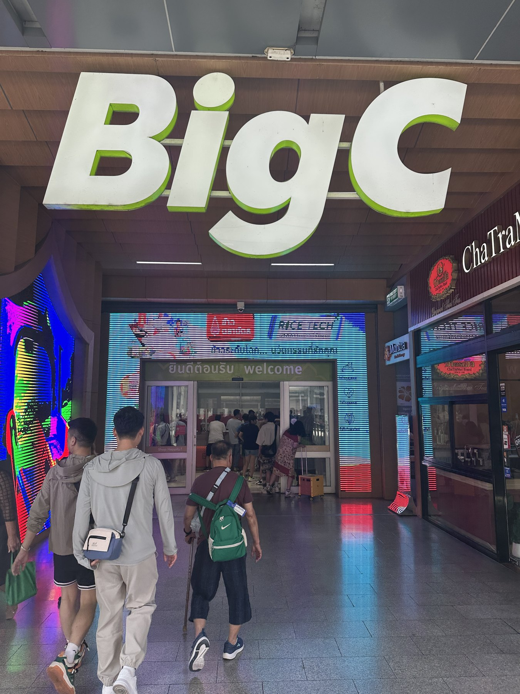
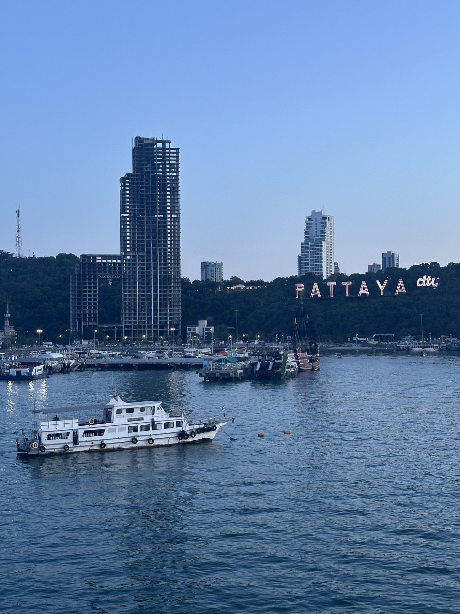
出發前重點
泰國好玩，但入境資料、現金、電子菸和寺廟穿著要先準備。
TDAC 是泰國電子入境卡，入境前要先線上填寫。請認明官方網站，不要隨便點來路不明的付費代辦連結；出發前 YoYo 會提醒大家填寫時間和要準備的資料。
泰銖小鈔也可以準備一點，買水、上廁所、夜市小店會方便很多。
這個真的不要賭，出發前直接從包包拿掉，整趟旅行會安心很多。
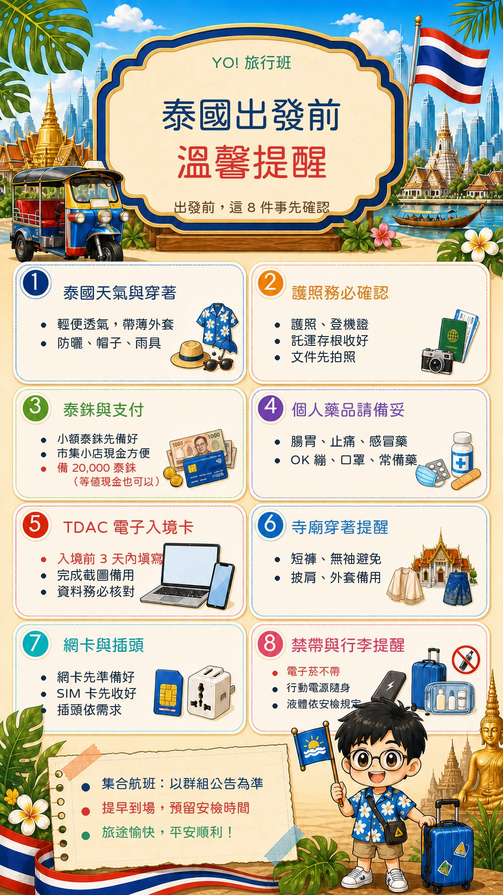
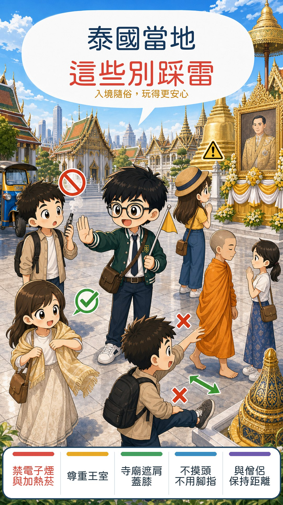
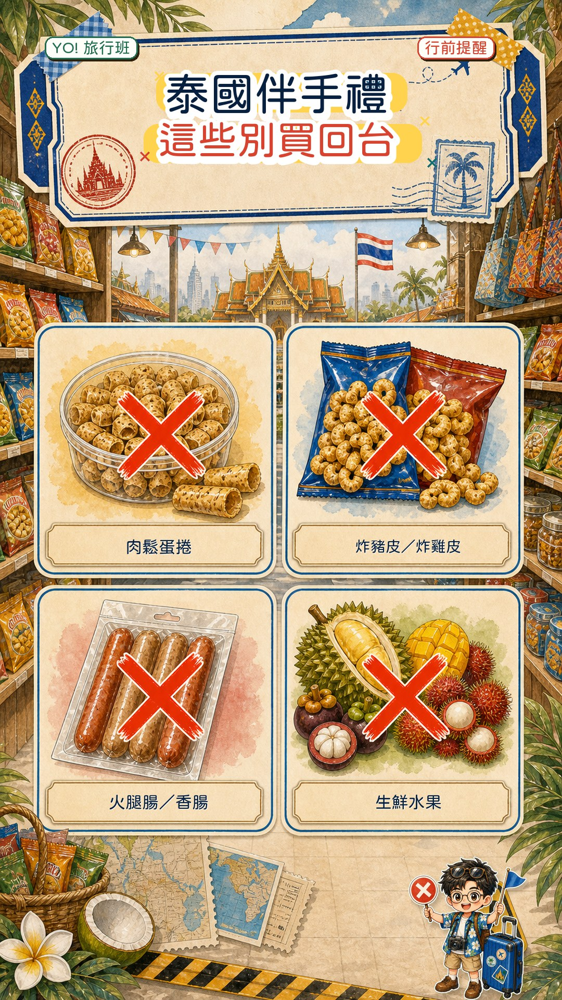
交通與自由活動
曼谷看商場與人潮，芭達雅看自由活動與短程移動。先記集合，玩起來最穩。
上車前看清楚車牌、車型、司機資訊和上車點；要回集合點或飯店，也記得多留一點塞車時間。
先把集合點存起來，再開始逛。人多的地方手機和包包放前面，現金分開放；如果想臨時改路線，記得先跟我說一聲，我才知道大家在哪裡。
當地提醒
在泰國玩得舒服，關鍵是尊重、避開麻煩，也照顧好自己。
簡單記：王室、政治、抗議活動這類話題，少評論、不開玩笑、不轉傳。
商場、景點和自由活動點都很熱鬧。拍完照記得把手機收好，包包拉鍊關上，現金也不要全部放同一個位置。
YoYo 帶你吃
我先放幾個容易遇到，也比較有泰國記憶點的味道。看到喜歡的，就可以試試看。
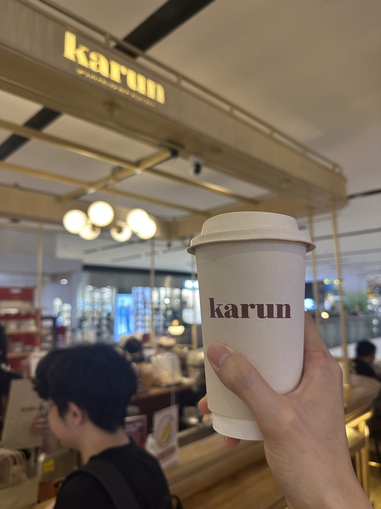
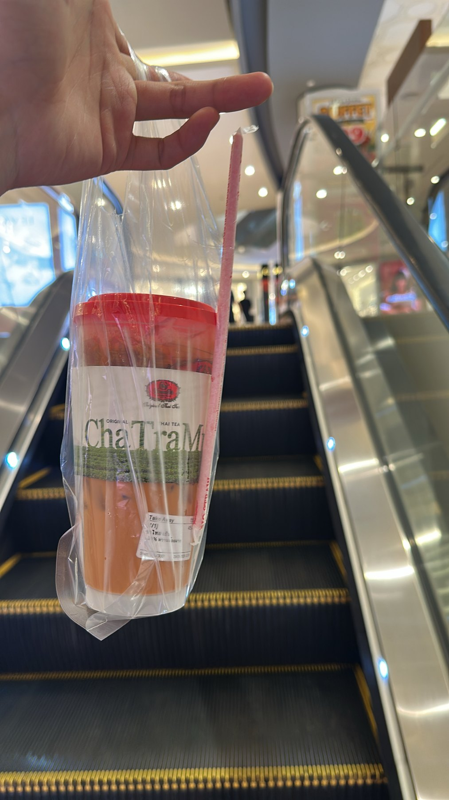
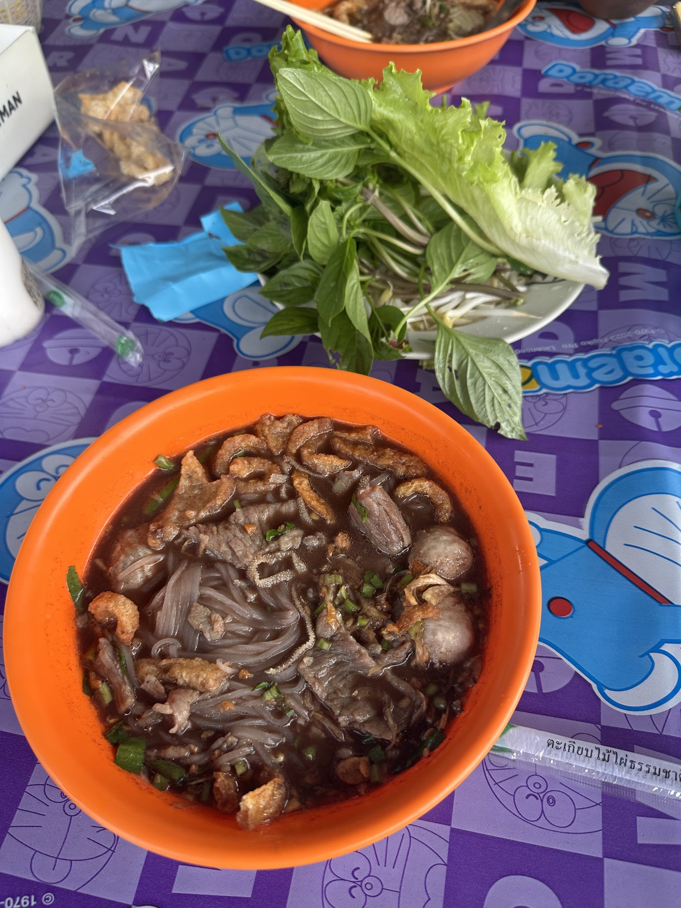
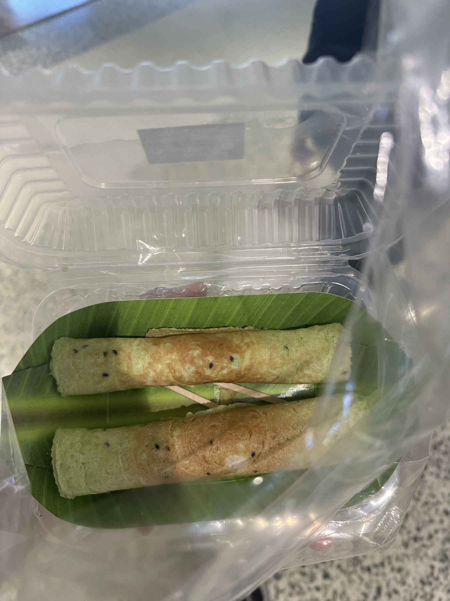
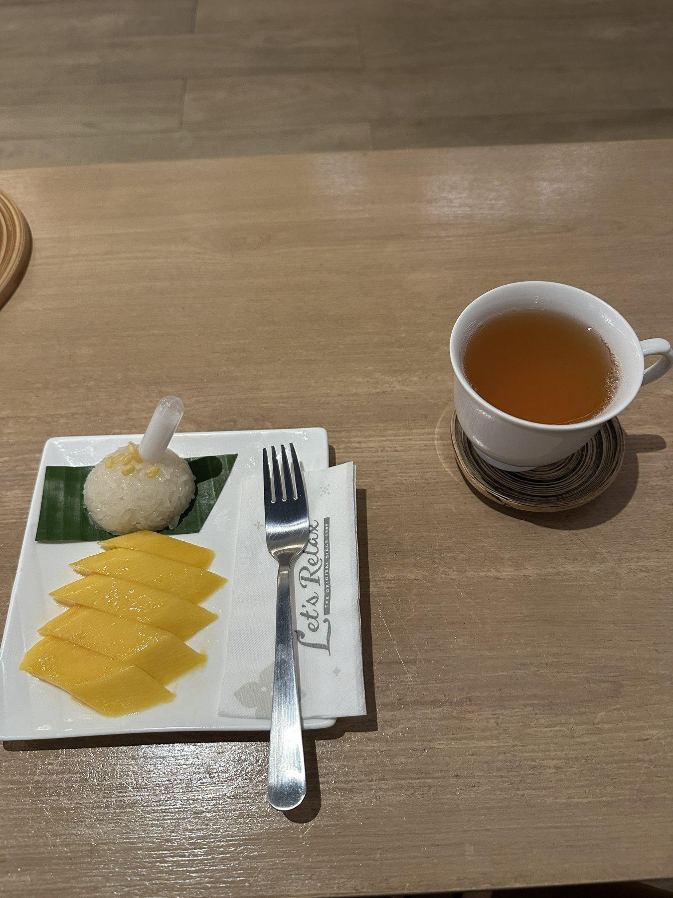
自由活動點飲料時，先講需求會比較順，不然拿到後才發現太冰、太甜就可惜了。
建議以瓶裝水為主。自由活動買冰飲、海鮮或路邊攤時，請照自己的腸胃狀況來，不要為了嘗鮮影響後面行程。
YoYo 帶你走跳
這裡先把曼谷、芭達雅常見會走到的點整理起來；遇到哪一站，就知道它好逛在哪裡、要注意什麼。
每團停留點會不太一樣，這頁先當作旅途小抄。真的走到現場，我會再提醒大家怎麼拍、怎麼逛、什麼時間回來。
YoYo 帶你買
買泰國伴手禮很容易失手，先抓好買、好分、好帶，回台也要能過關。
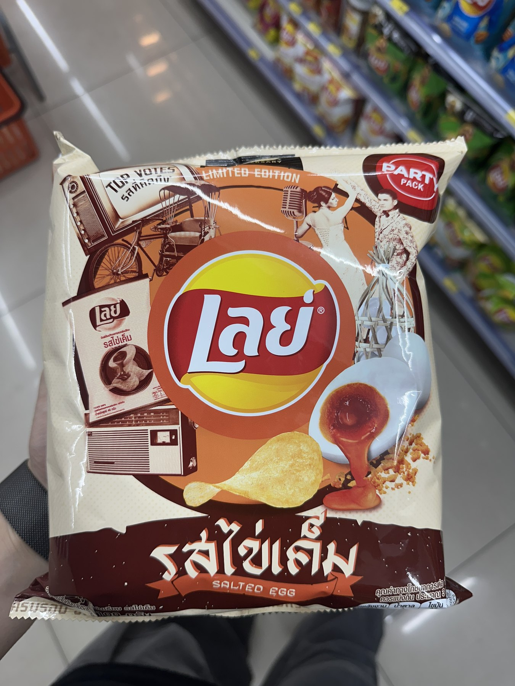
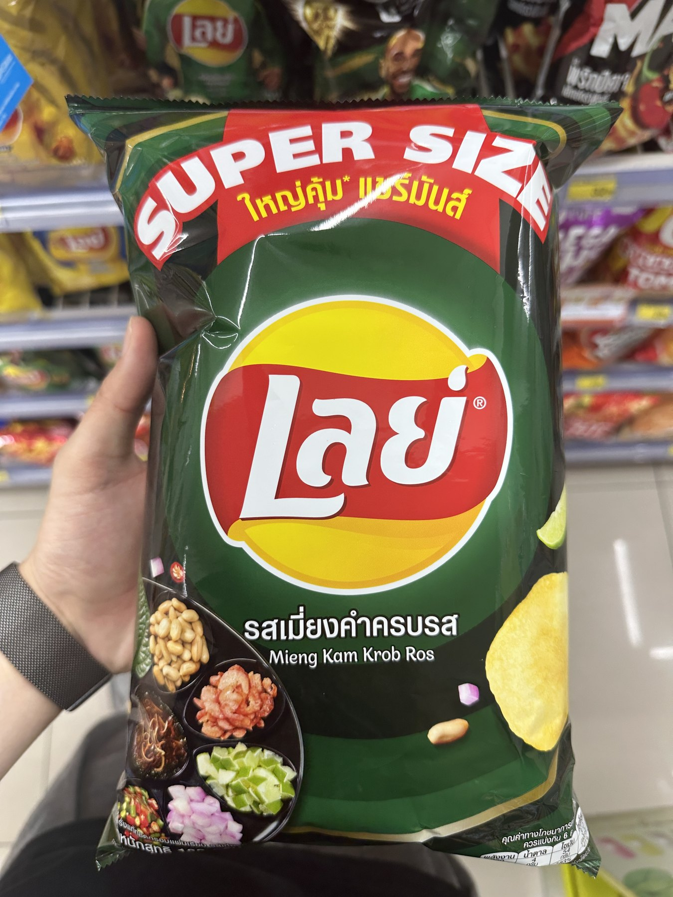
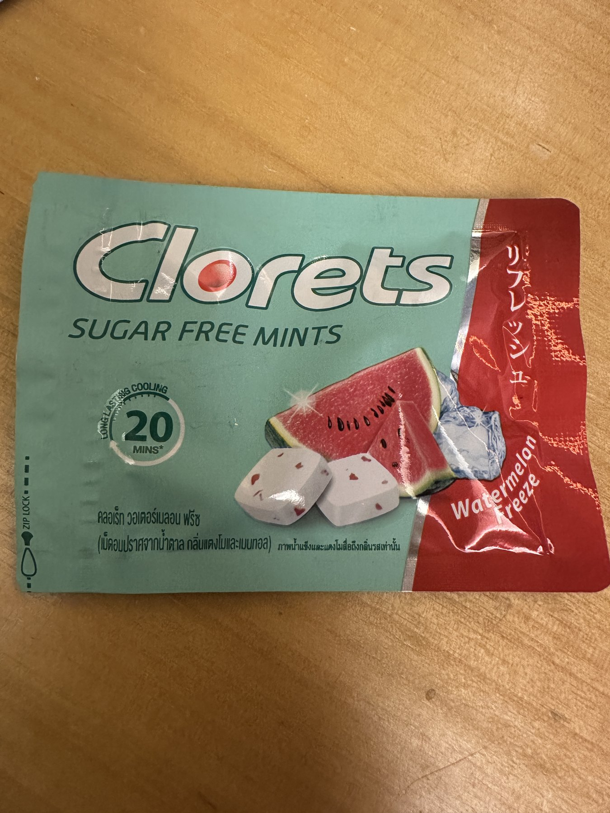
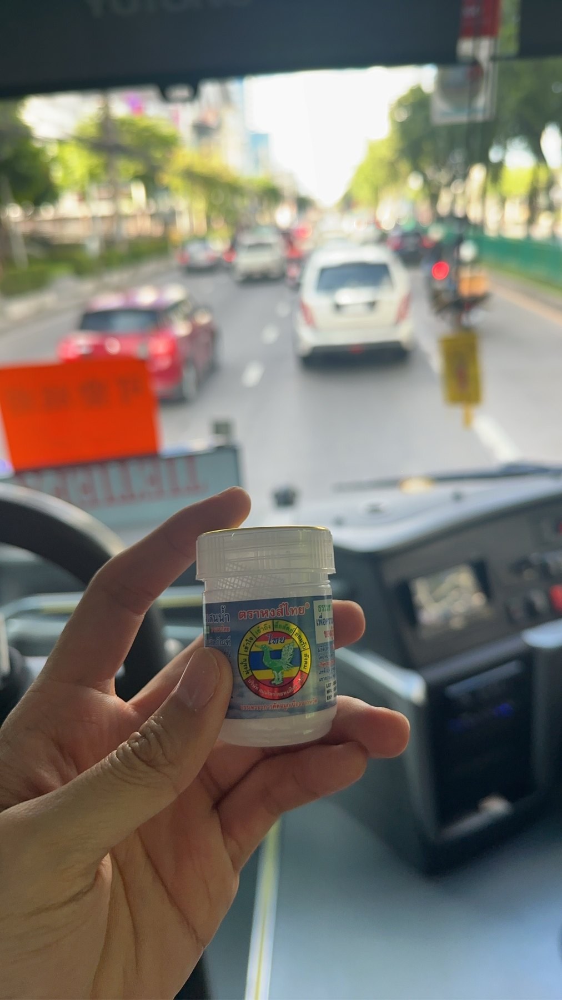
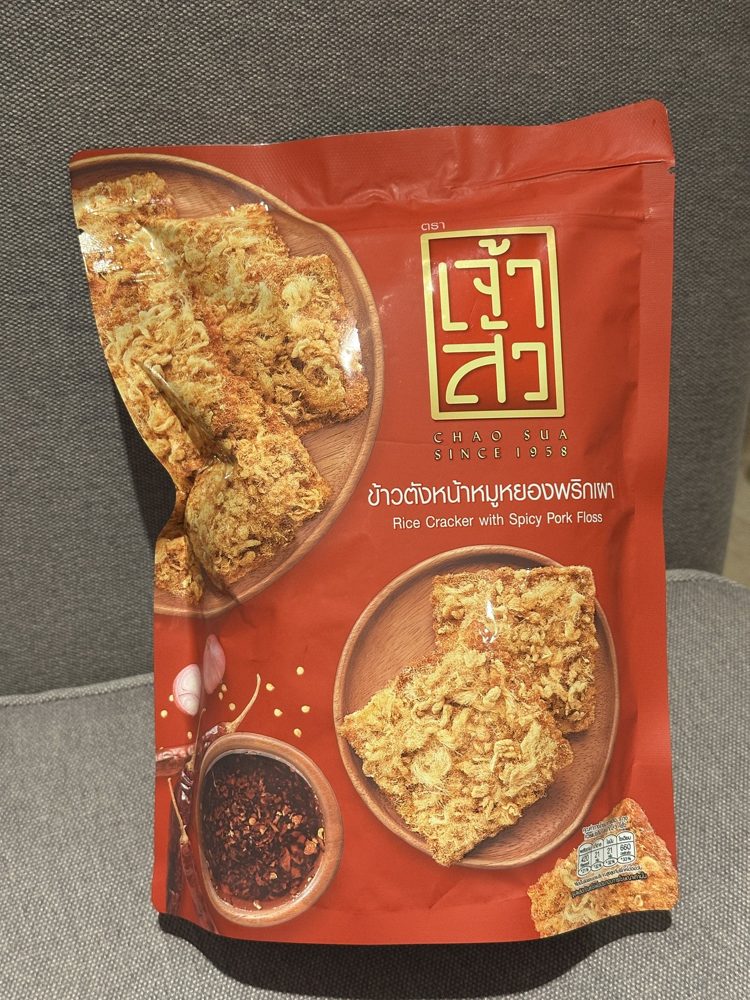
回台前整理
最後一天不要只忙著把戰利品塞進行李，禁帶物和行動電源要先整理。
肉乾、香腸、肉鬆、含肉泡麵調理包、飛機餐沒吃完的肉類食品，都不要放進行李。看不懂成分時，最安全就是不要買、不要帶、不要寄。
新鮮水果不要帶回台灣。植物、種子、新鮮農產品或看不出成分的商品，也不要隨便放進行李；真的不確定就先問我。
- 護照、手機、錢包、房卡、充電器、保險箱先檢查。
- 行動電源限帶 2 個，放手提，不要放托運行李。
- 液體、免稅品、易碎品分開整理。
- 食品、菸酒、藥品與需申報物品不確定就先問。
- 抵達桃園後，確認行李件數與外觀再離開。
常見問題
把團員最常問的問題先整理起來，出發前滑一下就安心很多。
泰國現在要填 TDAC 嗎？
要。TDAC 是泰國電子入境卡，入境前要線上填寫。請認明官方網站，出發前 YoYo 也會提醒大家填寫時間和需要準備的資料。
台灣護照去泰國需要簽證嗎？
目前台灣護照可用免簽方式入境泰國短期旅遊，但護照、回程、住宿、財力資料和 TDAC 還是要準備好。出發前我會再依官方公告提醒大家。
電子菸可以帶去泰國嗎？
不要帶。電子菸、煙油和相關設備在泰國管制很嚴，最安全就是出發前從包包拿掉，也不要在當地買或使用。
Grab 需要先在台灣註冊嗎？
很建議先註冊好。人在國外有時候收不到台灣簡訊，到了當地才辦會很卡。自由活動叫車前，也要確認車牌、車型、司機資訊和上車點。
Big C 有什麼推薦買？
可以先看三類：零食泡麵、伴手禮、實用小物。像媽媽牌船麵、洋芋片、小熊餅乾、芒果乾、KUNNA 果乾、鼻通和青草膏都常被問到。食品類回台前要看成分，看不懂就先不要買太特殊的。
四面佛怎麼拜？
常見方式是從正面開始，順時鐘方向參拜。到信仰場所放慢腳步、尊重現場，不要只顧拍照，也記得把隨身物品放好。
芭達雅雙條車可以自己搭嗎？
自由活動若要搭，先講好目的地和價格再上車。不要上車後才談價格，晚上也不要單獨去太偏的位置。
水果、肉乾、含肉泡麵可以帶回台灣嗎？
不建議帶。新鮮水果、肉類、含肉食品和來源不明的食品都容易出問題；不確定時先問 YoYo，或直接不要買。
肉鬆餅乾可以買回台灣嗎？
不要帶回台灣。這款 YoYo 自己很喜歡，但因為含肉鬆、肉類成分，建議在泰國吃完。只要看到肉鬆、肉乾、肉類字樣，打包前都要特別小心。
行動電源可以放托運嗎？
不可以。行動電源要放隨身行李，不要放托運；目前規定每人限帶 2 個，飛行途中不可使用或充電。外殼容量標示要清楚，破損、膨脹或看不出容量的就不要帶。
入境、簽證、海關、行李和營業資訊都可能更新。這些連結先放著，出發前 YoYo 會再依官方公告幫大家確認一次。